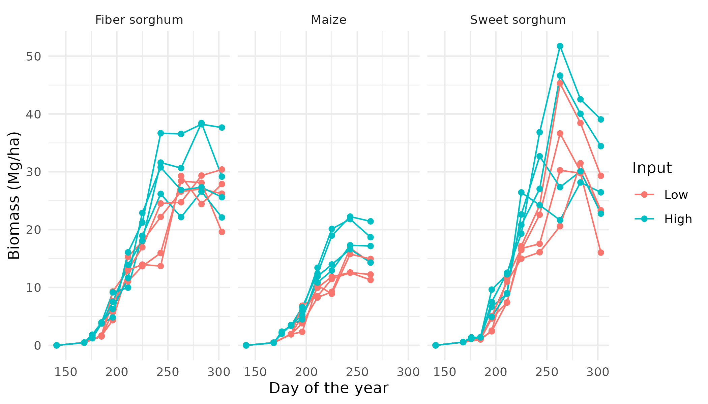
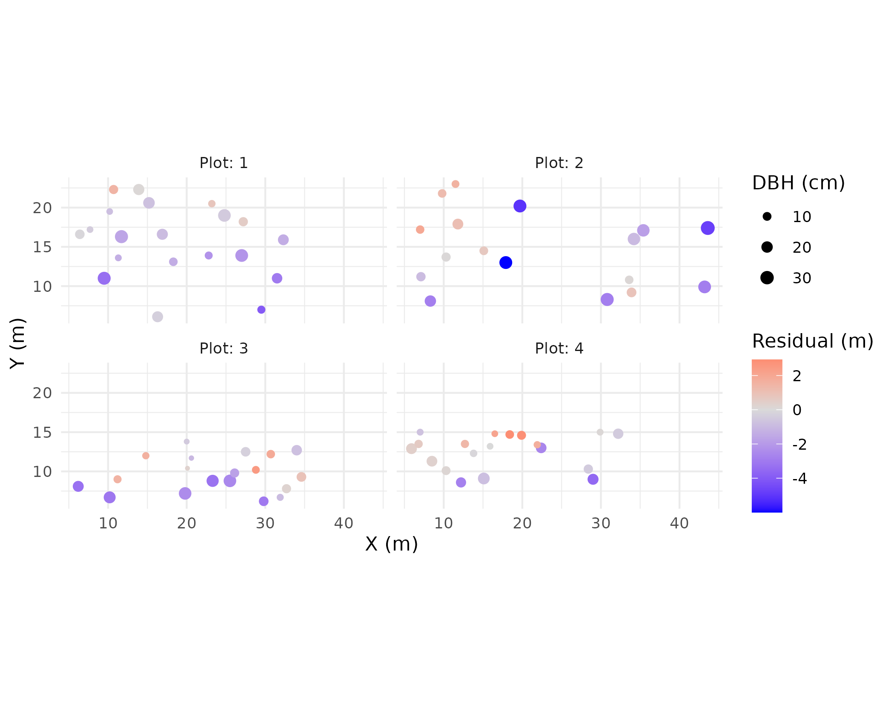

This vignette covers correlation structures of the residuals, temporal and spatial. Temporal correlation is the autocorrelation of the residuals of an individual over time, here the biomass of a plot sampled over a season; spatial correlation is the correlation of the residuals of observations close to each other in space, here the heights of neighbouring trees. The vignette Simulation shows how to check by simulation that the autocorrelation is recovered when it is there.
Temporal correlation
The sorghum and maize data
The data set SorghumMaize contains the above-ground
biomass (Mg/ha) of fiber sorghum, sweet sorghum and maize at two input
levels of water and nitrogen, in four blocks, sampled on 11 days of the
year from sowing, day 141, to day 303 (Danalatos et al., 2009; Miguez,
2025). Each combination of crop, input level and block is a plot,
sampled repeatedly over the season. The growth of a crop over a season
is determinate: it stops at maturity, after which the biomass may
decline as leaves are lost. The beta growth function of Yin et
al. (2003), model = "beta", describes this, from the start
of growth
,
here fixed at sowing, to the maximum
at the end of growth
,
with the time of the fastest growth
,
and back towards zero after
,
reaching it at
(see the vignette Growth models and their parameters;
model = "beta_capped" stays at the maximum instead).
The biomass varies little between the plots while it is small, and
more as it grows. A gaussian model has a constant residual variance, as
large at sowing as at maturity, and data simulated from it are often
negative early in the season. The lognormal family,
family = "lognormal", has a constant coefficient of
variation instead:
is normal with mean
and standard deviation
,
so that the curve
is the median of the biomass, and the residuals are relative deviations
from it. It needs positive responses, so the zero biomass at sowing is
left out; the beta curve is zero at sowing,
,
anyway. The asymptote and the time of the fastest growth depend on the
crop and the input level, and each plot has a random asymptote:
library(gcTMB)
library(ggplot2)
SorghumMaize$plot <- interaction(SorghumMaize$Crop, SorghumMaize$Input, SorghumMaize$Block, drop = TRUE)
sm <- subset(SorghumMaize, Biomass > 0)
fitre <- gcTMB(Biomass ~ DOY, fform = b1 + b2 ~ Crop * Input, rform = b1 ~ 1 | plot, data = sm,
model = "beta", start = c(b4 = 141), family = "lognormal")
ggplot(SorghumMaize, aes(x = DOY, y = Biomass, group = plot, colour = Input)) +
geom_line() +
geom_point() +
facet_wrap(~ Crop) +
labs(x = "Day of the year", y = "Biomass (Mg/ha)", colour = "Input") +
theme_minimal()
Autocorrelation of the residuals
A plot that is above its curve at one sampling may stay above it at
the next. The correlation argument models this
autocorrelation of the residuals within a group over time, with the same
correlation structures as the package nlme (Pinheiro and Bates, 2000;
Zuur et al., 2009, Chapter 6). The residuals
of a group are normal with the residual variance
and
with
the correlation of residuals one unit of time apart.
corAR1() is the autoregressive process of order 1 at
integer times (or at the positions of the observations, with
form = ~ 1 | group), with
;
corCAR1() its continuous-time version, for unequally spaced
times, with
.
Residuals of different groups are independent, and the correlation is
available for the gaussian and lognormal (on the log scale) families. As
the process is Markov, each residual given the previous one of its
group,
earlier, is normal with mean
and variance
,
so the likelihood is exact and its cost linear in the number of
observations; with random effects, the Laplace approximation integrates
them out as before.
The parameter
is estimated on an unconstrained scale, as in nlme. For
corCAR1(), with
,
this is the logit link,
.
For corAR1(), with
,
it is
,
the logit of
,
which maps the interval
to the real line (twice Fisher’s
-transformation,
).
coef() reports the parameter on this scale, as
cor_par:CAR1 or cor_par:AR1, and
corpars(), summary() and
confint() report
itself.
The plots are sampled about every 15 days, at unequal intervals, so
corCAR1(form = ~ DOY | plot) is the structure to use, with
the correlation per day. Its starting value is
by default, as in nlme, which is a correlation of
,
practically zero, between consecutive samplings; there the likelihood
hardly changes with
,
and the optimiser stays near the starting value. A starting value close
to 1, value = 0.9, starts from a correlation of
between samplings. For the lognormal family, the correlation is that of
the residuals of
,
the relative deviations from the curve:
fitrec <- gcTMB(Biomass ~ DOY, fform = b1 + b2 ~ Crop * Input, rform = b1 ~ 1 | plot, data = sm,
model = "beta", start = c(b4 = 141), family = "lognormal",
correlation = corCAR1(value = 0.9, form = ~ DOY | plot))
summary(fitrec)
#> Call:
#> gcTMB(form = Biomass ~ DOY, fform = b1 + b2 ~ Crop * Input, rform = b1 ~
#> 1 | plot, data = sm, start = c(b4 = 141), correlation = corCAR1(value = 0.9,
#> form = ~DOY | plot), family = "lognormal", model = "beta")
#>
#> Model: beta
#> Family: lognormal, identity link for all parameters
#>
#> Number of observations: 212, groups: plot 24
#> Log-likelihood: -466.3 (df = 16), AIC: 964.5, BIC: 1018
#>
#> Coefficients:
#> Estimate Std. Error z value Pr(>|z|)
#> b1:(Intercept) 32.6795 2.3532 13.887 < 2e-16 ***
#> b1:CropMaize -13.0754 2.9466 -4.437 9.1e-06 ***
#> b1:CropSweet sorghum -0.1908 3.3406 -0.057 0.9545
#> b1:InputHigh 7.1624 3.6936 1.939 0.0525 .
#> b1:CropMaize:InputHigh 1.2994 4.7927 0.271 0.7863
#> b1:CropSweet sorghum:InputHigh 2.2539 5.3285 0.423 0.6723
#> b2:(Intercept) 237.4210 1.4388 165.012 < 2e-16 ***
#> b2:CropMaize -5.3300 2.3608 -2.258 0.0240 *
#> b2:CropSweet sorghum 2.3127 1.7981 1.286 0.1984
#> b2:InputHigh -0.6375 1.8354 -0.347 0.7283
#> b2:CropMaize:InputHigh 0.5966 3.2051 0.186 0.8523
#> b2:CropSweet sorghum:InputHigh 0.5322 2.4436 0.218 0.8276
#> b3:(Intercept) 278.3070 1.0786 258.028 < 2e-16 ***
#> ---
#> Signif. codes: 0 '***' 0.001 '**' 0.01 '*' 0.05 '.' 0.1 ' ' 1
#> Unadjusted Wald tests; tests of the differences between curves adjusted for their number: partest().
#> Fixed: b4:(Intercept) = 141
#>
#> Random effects:
#> Groups Name Std.Dev.
#> plot b1 0.0002202
#> Standard deviations close to zero (singular fit): plot b1
#>
#> Residual standard deviation of log(y): 0.2904
#>
#> Correlation structure: continuous-time AR(1) in DOY within plot
#> rho: 0.04809
#>
#> Optimiser: relative convergence (4), maximum absolute gradient 2.2e-05
corpars(fitrec)^15
#> rho
#> 1.702408e-20
anova(fitre, fitrec)
#> Likelihood ratio tests of gcTMB models
#>
#> npar AIC BIC logLik deviance LR Df Pr(>LR)
#> fitre 15 962.53 1012.9 -466.27 932.53
#> fitrec 16 964.53 1018.2 -466.27 932.53 2.8823e-08 1 0.9999The estimate of moves far down from its starting value, to a correlation of practically zero between consecutive samplings, and the likelihood ratio test finds no autocorrelation: the relative deviations of a plot from its curve are independent over the season. The random asymptotes of the plots are not needed either, as their standard deviation is close to zero once the crops and the input levels have their own curves. With the gaussian family, both appear to be needed; this is not a feature of the plots, but of the constant residual variance, which misfits the small deviations early in the season and the large ones late. The vignette Simulation shows, with simulations with a true autocorrelation, that the model finds it when it is there.
confint() gives the profile likelihood interval of
,
or with method = "wald" a Wald interval computed on the
logit scale and transformed back. Here it spans the whole range from 0
to 1: without autocorrelation in the data, the likelihood is flat in
,
and the data say nothing about its value.
confint(fitrec, parm = "cor_par:CAR1", method = "wald")
#> 2.5 % 97.5 %
#> rho 0 1Spatial correlation
The Scots pine data
The data set PineHeightDiameter contains the heights (m)
and the diameters at breast height (cm) of 1678 Scots pine trees on 56
sample plots in eastern Finland, with the position of each tree within
its plot, X and Y in metres (Pukkala, 1989;
Mehtätalo and Lappi, 2020). The height grows with the diameter from the
breast height of 1.3 m, as the Chapman-Richards curve with the intercept
describes (see the vignette Fixed and random effects). Trees
that grow close to each other share their light, water and soil, and
compete with each other, so that a tree that is taller than the curve
predicts for its diameter may have neighbours that are taller too
(Pukkala, 1989).
To keep the example quick, we use the 41 plots with up to 20 measured trees each, leaving out the 15 plots with 48 to 105. We first fit a single curve for all plots, without random effects, with the correlation of the residuals within each plot, and then compare the spatial correlation with random effects of the plots. The residuals of the fit without correlation, at the positions of the trees of four plots, show that the positive and the negative residuals cluster:
ntrees <- table(PineHeightDiameter$Plot)
pines <- droplevels(subset(PineHeightDiameter, Plot %in% names(ntrees)[ntrees <= 20]))
fit0 <- gcTMB(Height ~ DBH, data = pines, model = "chapmanrichards")
pines$resid <- residuals(fit0, type = "response")
ggplot(subset(pines, Plot %in% levels(pines$Plot)[1:4]), aes(X, Y, colour = resid, size = DBH)) +
geom_point() +
scale_colour_gradient2(low = "blue", mid = "grey85", high = "red") +
scale_size_area(max_size = 3) +
coord_equal() +
facet_wrap(~ Plot, labeller = label_both) +
labs(x = "X (m)", y = "Y (m)", colour = "Residual (m)", size = "DBH (cm)") +
theme_minimal()
Exponential and Gaussian correlation
corExp() and corGaus() give the correlation
of two residuals of a group as a function of the distance
between their positions, with a range
:
as in nlme (Pinheiro and Bates, 2000, Section 5.3). The exponential
correlation falls quickly at short distances and then levels off; the
Gaussian correlation stays close to its maximum at short distances and
then falls steeply, for residuals that change smoothly in space. The
positions are given in the form, ~ X + Y | Plot, and the
distance is euclidean by default (metric = "manhattan" or
"maximum" give the others). Residuals of different plots
are independent.
The nugget
,
with nugget = TRUE, is the share of the residual variance
that is independent between trees, such as measurement error and the
variation of a tree that its neighbours do not share; the remaining
share
is correlated with the neighbours (Diggle, 1988). Without a nugget,
,
and two trees at the same position would have the same residual. The
range and the nugget are estimated on the scales
and
,
as in nlme, and reported as cor_par:range and
cor_par:nugget by coef();
corpars() gives them on their natural scale. The residuals
of a plot are multivariate normal with this correlation matrix, so the
cost of a fit grows with the cube of the number of trees per plot.
As in nlme, the range starts by default at 90% of the smallest
distance between two trees of a plot, and the nugget at 0.1. The
smallest distance here is 0.22 m, at which start the Gaussian
correlation between trees a metre apart is practically zero: the
likelihood hardly changes with the range there, and the optimiser stays
at the starting value, as for corCAR1() above. A starting
range of a few metres, value = c(5, 0.2) for the range and
the nugget, avoids this:
fitexp <- update(fit0, correlation = corExp(5, form = ~ X + Y | Plot))
fitexpn <- update(fit0, correlation = corExp(c(5, 0.2), form = ~ X + Y | Plot, nugget = TRUE))
fitgausn <- update(fit0, correlation = corGaus(c(5, 0.2), form = ~ X + Y | Plot, nugget = TRUE))
fitexpn
#> Call:
#> gcTMB(form = Height ~ DBH, data = pines, correlation = corExp(c(5,
#> 0.2), form = ~X + Y | Plot, nugget = TRUE), model = "chapmanrichards")
#>
#> Model: chapmanrichards
#> Family: gaussian, identity link for all parameters
#>
#> Coefficients:
#> b1:(Intercept) b2:(Intercept) b3:(Intercept)
#> 26.05144 0.03859 0.82124
#> Fixed: b4:(Intercept) = 1.3
#>
#> Residual standard deviation: 2.62
#>
#> Correlation structure: exponential in X + Y within Plot, with nugget
#> range: 53.6572, nugget: 0.2835
rbind(exponential = c(corpars(fitexp), nugget = 0), "exponential, nugget" = corpars(fitexpn),
"Gaussian, nugget" = corpars(fitgausn))
#> range nugget
#> exponential 8.804564 0.0000000
#> exponential, nugget 53.657217 0.2835216
#> Gaussian, nugget 50.447003 0.3803111
anova(fit0, fitexp, fitexpn)
#> Likelihood ratio tests of gcTMB models
#>
#> npar AIC BIC logLik deviance LR Df Pr(>LR)
#> fit0 4 2733.3 2750.9 -1362.7 2725.3
#> fitexp 5 2556.2 2578.2 -1273.1 2546.2 179.11 1 < 2.2e-16 ***
#> fitexpn 6 2442.5 2468.9 -1215.3 2430.5 115.67 1 < 2.2e-16 ***
#> ---
#> Signif. codes: 0 '***' 0.001 '**' 0.01 '*' 0.05 '.' 0.1 ' ' 1
AIC(fit0, fitexp, fitexpn, fitgausn)
#> df AIC
#> fit0 4 2733.321
#> fitexp 5 2556.213
#> fitexpn 6 2442.538
#> fitgausn 6 2455.544The spatial correlation improves the fit by far: the log-likelihood increases by 89.6 with the exponential correlation, at the cost of a single parameter. The nugget improves it further, and the exponential correlation with a nugget has the smallest AIC of the three structures. Its range of 53.7 m gives the correlation between trees 2 m apart and 0.49 between trees 20 m apart, across a plot of about 40 by 30 m, and the nugget, 0.28, is the share of the residual variance that a tree does not share with its neighbours. The likelihood ratio test of the nugget is on the boundary of its parameter space, , where the test is conservative; halving the p-value corrects for this. Wald intervals for the range and the nugget are computed on the scales and and transformed back:
Spatial correlation or random effects
A range longer than the plots means that the correlation stays large
across a whole plot: the trees of a plot deviate from the curve
together. This is also what a random effect of the plot describes,
e.g. a random asymptote, with which all trees of a plot are taller or
shorter than the common curve. Both are models of the dependence of the
trees of a plot, and they are compared by AIC, as both are fitted by
maximum likelihood. We fit a random asymptote
of each plot, random asymptotes and rates
and
,
and a random asymptote together with the exponential correlation. The
random effects of
and
are uncorrelated (||): with a correlation between them, the
optimiser stops with false convergence, as the likelihood is nearly flat
in some directions. With random effects,
control = list(restart = TRUE) optimises once more from the
estimates where the first optimisation stops short of convergence (see
the vignette Simulation):
ctl <- list(restart = TRUE)
fitre1 <- update(fit0, rform = b1 ~ 1 | Plot, control = ctl)
fitre2 <- update(fit0, rform = b1 + b2 ~ 1 || Plot, control = ctl)
fitre1exp <- update(fit0, rform = b1 ~ 1 | Plot, correlation = corExp(5, form = ~ X + Y | Plot), control = ctl)
sapply(list(fitre1 = fitre1, fitre2 = fitre2, fitre1exp = fitre1exp), converged)
#> fitre1 fitre2 fitre1exp
#> TRUE TRUE TRUE
corpars(fitre1exp)
#> range
#> 3.04906
AIC(fit0, fitexpn, fitre1, fitre2, fitre1exp)
#> df AIC
#> fit0 4 2733.321
#> fitexpn 6 2442.538
#> fitre1 5 2409.003
#> fitre2 6 2355.868
#> fitre1exp 6 2382.282The random asymptote alone has a smaller AIC than any of the spatial correlation structures without random effects: most of the dependence of the trees of a plot is a shift of the whole plot, not a correlation that decreases with the distance. With the random asymptote, the exponential correlation still improves the fit, but its range drops to 3 m: what is left is a correlation between close neighbours, 0.52 between trees 2 m apart, which falls to practically zero across a plot. The random asymptotes and rates, without correlation, have the smallest AIC: the plots differ not only in the height the trees reach, but also in how fast the height increases with the diameter, and these differences between the plots capture the dependence of their trees better than the spatial correlation, alone or with a random asymptote. The spatial correlation without random effects describes these differences only through its long range, as deviations that the trees of a plot share.
References
Danalatos, N.G., Archontoulis, S.V. and Tsiboukas, K. (2009). Comparative analysis of sorghum versus corn growing under optimum and under water/nitrogen limited conditions in central Greece. In: Proceedings of the 17th European Biomass Conference, Hamburg, 538–544.
Diggle, P.J. (1988). An approach to the analysis of repeated measurements. Biometrics 44, 959–971.
Mehtätalo, L. and Lappi, J. (2020). Biometry for Forestry and Environmental Data: with Examples in R. Chapman and Hall/CRC, New York.
Miguez, F. (2025). nlraa: Nonlinear Regression for Agricultural Applications. R package, https://CRAN.R-project.org/package=nlraa.
Pinheiro, J.C. and Bates, D.M. (2000). Mixed-Effects Models in S and S-PLUS. Springer, New York.
Pukkala, T. (1989). Prediction of tree diameter and height in a Scots pine stand as a function of the spatial pattern of trees. Silva Fennica 23, 83–99.
Yin, X., Goudriaan, J., Lantinga, E.A., Vos, J. and Spiertz, H.J. (2003). A flexible sigmoid function of determinate growth. Annals of Botany 91, 361–371.
Zuur, A.F., Ieno, E.N., Walker, N.J., Saveliev, A.A. and Smith, G.M. (2009). Mixed Effects Models and Extensions in Ecology with R. Springer, New York.